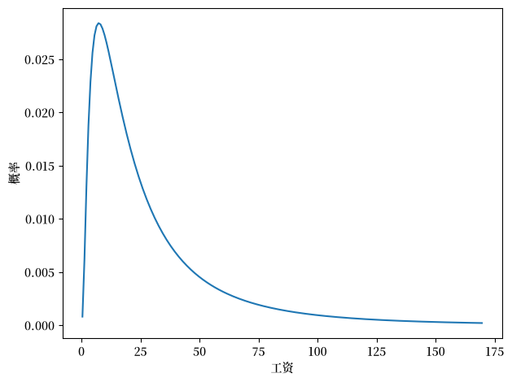
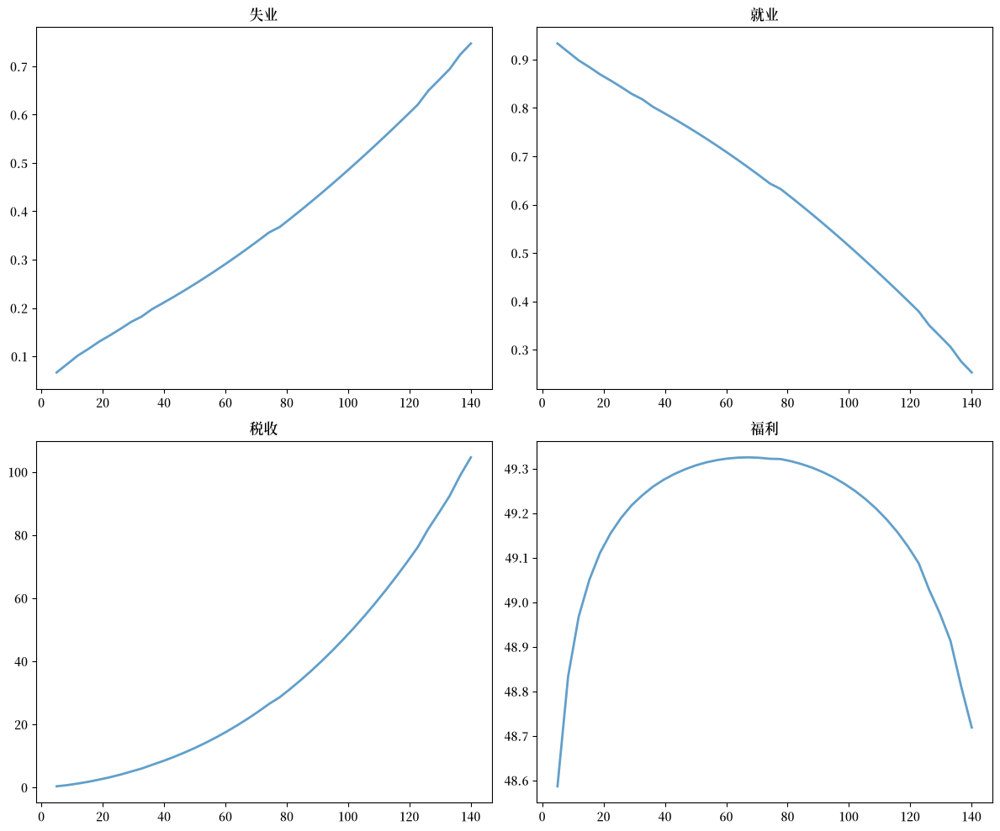
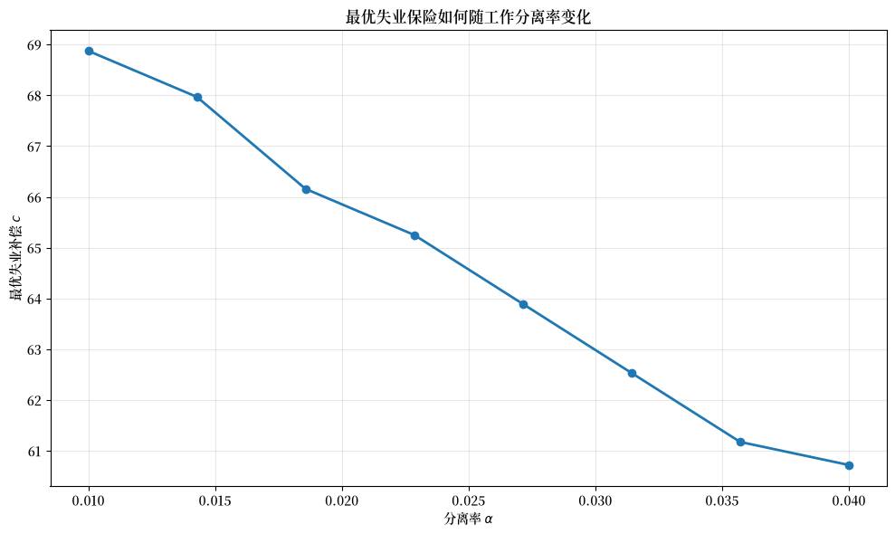

110. 具有内生工作发现率的湖泊模型#
GPU
本讲座是在配有GPU的机器上构建的——不过没有GPU也可以运行。
Google Colab 提供带GPU的免费套餐，使用方法如下：
点击右上角的”播放”图标
选择 Colab
将运行时环境设置为包含GPU
除了 Anaconda 中已有的内容外，本讲座还需要以下库：
!pip install quantecon jax
110.1. 概述#
本讲座是 湖泊模型讲座 的续篇。
我们建议你在继续本讲座之前先阅读那篇讲座。
在上一讲座中，我们研究了一个关于失业和就业的湖泊模型，其中状态之间的转移率是外生参数。
在本讲座中，我们通过使工作发现率变为内生的来扩展该模型。
具体来说，从失业到就业的转移率将由 McCall 搜寻模型 [McCall, 1970] 决定。
让我们从一些导入开始：
import matplotlib.pyplot as plt
import jax
import jax.numpy as jnp
from typing import NamedTuple
from quantecon.distributions import BetaBinomial
from functools import partial
import jax.scipy.stats as stats
import matplotlib as mpl # i18n
FONTPATH = "fonts/SourceHanSerifSC-SemiBold.otf" # i18n
mpl.font_manager.fontManager.addfont(FONTPATH) # i18n
mpl.rcParams['font.family'] = ['Source Han Serif SC'] # i18n
110.2. 设置#
模型的基本结构将如 湖泊模型讲座 中所讨论的那样。
唯一的区别是雇佣率是内生的，由居住在 McCall 搜寻模型 [McCall, 1970] 中的最优化代理人的决策决定，其中工资报价为独立同分布，工作分离率为 \(\alpha\)。
110.2.1. 保留工资#
在模型中，最优策略由一个保留工资 \(\bar w\) 刻画
如果手中的工资报价 \(w\) 大于或等于 \(\bar w\)，则工人接受。
否则，工人拒绝。
保留工资取决于工资报价分布和以下参数
\(\alpha\)，分离率
\(\beta\)，贴现因子
\(\gamma\)，报价到达率
\(c\)，失业补偿
工资报价分布将是对数正态分布的离散化版本。
我们首先定义一个函数来创建这样的离散分布。
def create_wage_distribution(
max_wage: float,
wage_grid_size: int,
log_wage_mean: float
):
"""
创建对数正态密度 LN(log(m),1) 的离散化版本，其中
m 是 log_wage_mean。
"""
w_vec_temp = jnp.linspace(1e-8, max_wage, wage_grid_size + 1)
cdf = stats.norm.cdf(
jnp.log(w_vec_temp), loc=jnp.log(log_wage_mean), scale=1
)
pdf = cdf[1:] - cdf[:-1]
p_vec = pdf / pdf.sum()
w_vec = (w_vec_temp[1:] + w_vec_temp[:-1]) / 2
return w_vec, p_vec
下面的单元格创建一个离散化的 \(LN(\log(20),1)\) 工资分布并将其绘制出来。
w_vec, p_vec = create_wage_distribution(170, 200, 20)
fig, ax = plt.subplots()
ax.plot(w_vec, p_vec)
ax.set_xlabel('工资')
ax.set_ylabel('概率')
plt.tight_layout()
plt.show()
findfont: Failed to find font weight normal, now using 600.

现在我们组织给定一组参数下求解 McCall 模型的代码。
关于该模型及我们求解方法的背景，请参阅 关于具有分离的 McCall 模型的讲座
我们的第一步是定义效用函数和 McCall 模型数据结构。
def u(c, σ=2.0):
return jnp.where(c > 0, (c**(1 - σ) - 1) / (1 - σ), -10e6)
class McCallModel(NamedTuple):
"""
存储 McCall 搜寻模型的参数
"""
α: float # 工作分离率
β: float # 贴现率
γ: float # 工作报价率
c: float # 失业补偿
σ: float # 效用参数
w_vec: jnp.ndarray # 可能的工资值
p_vec: jnp.ndarray # w_vec 上的概率
def create_mccall_model(
α=0.2, β=0.98, γ=0.7, c=6.0, σ=2.0,
w_vec=None,
p_vec=None
) -> McCallModel:
if w_vec is None:
n = 60 # 工资可能结果的数量
# 工资在 10 到 20 之间
w_vec = jnp.linspace(10, 20, n)
a, b = 600, 400 # 形状参数
dist = BetaBinomial(n-1, a, b)
p_vec = jnp.array(dist.pdf())
return McCallModel(
α=α, β=β, γ=γ, c=c, σ=σ, w_vec=w_vec, p_vec=p_vec
)
接下来，我们实现贝尔曼算子
def T(mcm: McCallModel, V, U):
"""
更新贝尔曼方程。
"""
α, β, γ, c, σ = mcm.α, mcm.β, mcm.γ, mcm.c, mcm.σ
w_vec, p_vec = mcm.w_vec, mcm.p_vec
V_new = u(w_vec, σ) + β * ((1 - α) * V + α * U)
U_new = u(c, σ) + β * (1 - γ) * U + β * γ * (jnp.maximum(U, V) @ p_vec)
return V_new, U_new
现在我们定义值函数迭代求解器。
我们将使用编译的 while 循环以获得额外的速度。
@jax.jit
def solve_mccall_model(mcm: McCallModel, tol=1e-5, max_iter=2000):
"""
对贝尔曼方程迭代直到收敛。
"""
def cond(state):
V, U, i, error = state
return jnp.logical_and(error > tol, i < max_iter)
def update(state):
V, U, i, error = state
V_new, U_new = T(mcm, V, U)
error_1 = jnp.max(jnp.abs(V_new - V))
error_2 = jnp.abs(U_new - U)
error_new = jnp.maximum(error_1, error_2)
return V_new, U_new, i + 1, error_new
# 初始状态
V_init = jnp.ones(len(mcm.w_vec))
U_init = 1.0
i_init = 0
error_init = tol + 1
init_state = (V_init, U_init, i_init, error_init)
V_final, U_final, _, _ = jax.lax.while_loop(
cond, update, init_state
)
return V_final, U_final
110.2.2. 湖泊模型代码#
我们还需要上一讲座中的湖泊模型函数来计算稳态失业率：
class LakeModel(NamedTuple):
"""
湖泊模型的参数
"""
λ: float
α: float
b: float
d: float
A: jnp.ndarray
R: jnp.ndarray
g: float
def create_lake_model(
λ: float = 0.283, # 工作发现率
α: float = 0.013, # 分离率
b: float = 0.0124, # 出生率
d: float = 0.00822 # 死亡率
) -> LakeModel:
"""
使用默认参数创建 LakeModel 实例。
计算并存储转移矩阵 A 和 R，
以及劳动力增长率 g。
"""
# 计算增长率
g = b - d
# 计算转移矩阵 A
A = jnp.array([
[(1-d) * (1-λ) + b, (1-d) * α + b],
[(1-d) * λ, (1-d) * (1-α)]
])
# 计算归一化的转移矩阵 R
R = A / (1 + g)
return LakeModel(λ=λ, α=α, b=b, d=d, A=A, R=R, g=g)
@jax.jit
def rate_steady_state(model: LakeModel) -> jnp.ndarray:
r"""
通过计算对应于最大特征值的特征向量，
找到系统 :math:`x_{t+1} = R x_{t}` 的稳态。
根据佩龙-弗罗贝尼乌斯定理，由于 :math:`R` 是一个各列
之和为 1 的非负矩阵（随机矩阵），最大特征值等于 1，
对应的特征向量给出稳态。
"""
λ, α, b, d, A, R, g = model
eigenvals, eigenvec = jnp.linalg.eig(R)
# 找到对应于最大特征值的特征向量
# （对于随机矩阵，根据佩龙-弗罗贝尼乌斯定理该值为 1）
max_idx = jnp.argmax(jnp.abs(eigenvals))
# 获取对应的特征向量
steady_state = jnp.real(eigenvec[:, max_idx])
# 归一化以确保正值且和为 1
steady_state = jnp.abs(steady_state)
steady_state = steady_state / jnp.sum(steady_state)
return steady_state
110.2.3. 将 McCall 搜寻模型与湖泊模型联系起来#
假设湖泊模型内的所有工人都按照 McCall 搜寻模型行事。
离开就业的外生概率仍然是 \(\alpha\)。
但他们的最优决策规则决定了离开失业的概率 \(\lambda\)。
现在这是
其中
\(\bar w\) 是由参数决定的保留工资，
\(p\) 是工资报价分布。
工人群体中的工资报价是从 \(p\) 中独立抽取的。
这里我们在默认参数下计算 \(\lambda\)：
mcm = create_mccall_model(w_vec=w_vec, p_vec=p_vec)
V, U = solve_mccall_model(mcm)
w_idx = jnp.searchsorted(V - U, 0)
w_bar = jnp.where(w_idx == len(V), jnp.inf, mcm.w_vec[w_idx])
λ = mcm.γ * jnp.sum(p_vec * (w_vec > w_bar))
print(f"默认参数下的工作发现率 ={λ}.")
默认参数下的工作发现率 =0.4510621428489685.
110.3. 财政政策#
在本节中，我们将运用湖泊模型，考察与不同水平的失业补偿相关联的结果。
我们的目标是找到失业保险的最优水平。
我们假设政府设定失业补偿 \(c\)。
政府征收足以为总失业支付提供资金的一次性总付税 \(\tau\)。
要在稳态下实现预算平衡，税收、稳态失业率 \(u\) 和失业补偿率必须满足
一次性总付税适用于每个人，包括失业工人。
工资为 \(w\) 的就业工人的税后收入为 \(w - \tau\)。
失业工人的税后收入为 \(c - \tau\)。
对于政府政策的每一种设定 \((c, \tau)\)，我们都可以求解工人的最优保留工资。
这通过在税后工资上求值的 (110.1) 确定 \(\lambda\)，进而又确定一个稳态失业率 \(u(c, \tau)\)。
对于给定水平的失业补助 \(c\)，我们可以求解一个在稳态下平衡预算的税收
要评估各种备选的政府税收-失业补偿组合，我们需要一个福利标准。
我们使用稳态福利标准
其中记号 \(V\) 和 \(U\) 如上文所定义，期望是在稳态下取的。
110.3.1. 计算最优失业保险#
现在我们建立计算最优失业保险水平的基础设施。
首先，我们为经济体的参数定义一个容器：
class Economy(NamedTuple):
"""经济体的参数"""
α: float
b: float
d: float
β: float
γ: float
σ: float
log_wage_mean: float
wage_grid_size: int
max_wage: float
def create_economy(
α=0.013,
b=0.0124,
d=0.00822,
β=0.98,
γ=1.0,
σ=2.0,
log_wage_mean=20,
wage_grid_size=200,
max_wage=170
) -> Economy:
"""
使用一组默认值创建一个经济体"""
return Economy(α=α, b=b, d=d, β=β, γ=γ, σ=σ,
log_wage_mean=log_wage_mean,
wage_grid_size=wage_grid_size,
max_wage=max_wage)
接下来，我们定义一个函数，在给定政策参数下计算工人的最优行为：
@jax.jit
def compute_optimal_quantities(
c: float,
τ: float,
economy: Economy,
w_vec: jnp.array,
p_vec: jnp.array
):
"""
在给定 c 和 τ 的情况下，计算工人的保留工资、
工作发现率和值函数。
"""
mcm = create_mccall_model(
α=economy.α,
β=economy.β,
γ=economy.γ,
c=c-τ, # 税后补偿
σ=economy.σ,
w_vec=w_vec-τ, # 税后工资
p_vec=p_vec
)
# 在给定参数下计算保留工资
V, U = solve_mccall_model(mcm)
w_idx = jnp.searchsorted(V - U, 0)
w_bar = jnp.where(w_idx == len(V), jnp.inf, mcm.w_vec[w_idx])
# 计算工作发现率
λ = economy.γ * jnp.sum(p_vec * (w_vec - τ > w_bar))
return w_bar, λ, V, U
此函数在给定失业保险和税收水平的情况下计算稳态结果：
@jax.jit
def compute_steady_state_quantities(
c, τ, economy: Economy, w_vec, p_vec
):
"""
在给定 c 和 τ 的情况下，使用来自 McCall 模型的最优量并
计算相应的稳态量，从而计算稳态失业率
"""
# 通过求解 McCall 模型找到最优值和策略，
# 以及相应的工作发现率。
w_bar, λ, V, U = compute_optimal_quantities(c, τ, economy, w_vec, p_vec)
# 使用给定参数和工作发现率建立一个湖泊模型。
model = create_lake_model(λ=λ, α=economy.α, b=economy.b, d=economy.d)
# 从该湖泊模型计算稳态就业率和失业率。
u, e = rate_steady_state(model)
# 计算以就业为条件的预期终身价值。
mask = (w_vec - τ > w_bar)
w = jnp.sum(V * p_vec * mask) / jnp.sum(p_vec * mask)
# 计算稳态福利。
welfare = e * w + u * U
return e, u, welfare
我们需要一个函数来找到平衡政府预算的税率：
def find_balanced_budget_tax(c, economy: Economy, w_vec, p_vec):
"""
在给定失业补偿 c 的情况下，找到能够实现预算平衡的税率。
"""
def steady_state_budget(t):
"""
对于给定的税率 t，计算预算盈余。
"""
e, u, w = compute_steady_state_quantities(c, t, economy, w_vec, p_vec)
return t - u * c
# 使用简单的二分法找到平衡预算的税率
# （即将盈余设为零）
t_low, t_high = 0.0, 0.9 * c
tol = 1e-6
max_iter = 100
for i in range(max_iter):
t_mid = (t_low + t_high) / 2
budget = steady_state_budget(t_mid)
if abs(budget) < tol:
return t_mid
elif budget < 0:
t_low = t_mid
else:
t_high = t_mid
return t_mid
现在我们计算就业、失业、税收和福利如何随失业补偿率变化：
# 创建经济体和工资分布
economy = create_economy()
w_vec, p_vec = create_wage_distribution(
economy.max_wage, economy.wage_grid_size, economy.log_wage_mean
)
# 我们希望研究的失业保险水平
c_vec = jnp.linspace(5, 140, 40)
tax_vec = []
unempl_vec = []
empl_vec = []
welfare_vec = []
for c in c_vec:
t = find_balanced_budget_tax(c, economy, w_vec, p_vec)
e_rate, u_rate, welfare = compute_steady_state_quantities(
c, t, economy, w_vec, p_vec
)
tax_vec.append(t)
unempl_vec.append(u_rate)
empl_vec.append(e_rate)
welfare_vec.append(welfare)
让我们可视化结果：
fig, axes = plt.subplots(2, 2, figsize=(12, 10))
plots = [unempl_vec, empl_vec, tax_vec, welfare_vec]
titles = ['失业', '就业', '税收', '福利']
for ax, plot, title in zip(axes.flatten(), plots, titles):
ax.plot(c_vec, plot, lw=2, alpha=0.7)
ax.set_title(title)
plt.tight_layout()
plt.show()
findfont: Failed to find font weight normal, now using 600.

随着失业补助的增加，福利先增加后减少。
使稳态福利最大化的水平大约为 62。
110.4. 练习#
练习 110.1
使稳态福利最大化的失业补偿水平 \(c\) 如何随工作分离率 \(\alpha\) 变化？
对于从 0.01 到 0.04 的一系列分离率 \(\alpha\)，计算并绘制最优 \(c\)（使福利最大化的值）。
对于每个 \(\alpha\) 值，通过在 \(c\) 值范围内计算福利并选择最大值来找到最优 \(c\)。
解答 练习 110.1
这是一个解法：
# 要探索的分离率范围（更宽的范围，更少的点）
α_values = jnp.linspace(0.01, 0.04, 8)
# 我们将为每个 α 存储最优 c
optimal_c_values = []
# 使用更精细的 c 值网格以获得更好的分辨率
c_vec_fine = jnp.linspace(5, 140, 150)
for α_val in α_values:
# 使用该 α 创建经济体参数
params_α = create_economy(α=α_val)
# 创建工资分布
w_vec_α, p_vec_α = create_wage_distribution(
params_α.max_wage, params_α.wage_grid_size, params_α.log_wage_mean
)
# 为每个 c 值计算福利
welfare_values = []
for c in c_vec_fine:
t = find_balanced_budget_tax(c, params_α, w_vec_α, p_vec_α)
e_rate, u_rate, welfare = compute_steady_state_quantities(
c, t, params_α, w_vec_α, p_vec_α
)
welfare_values.append(welfare)
# 福利函数在其最大值附近非常平坦。
# 由于数值噪声，在单个点上使用 argmax 可能不稳定。
# 相反，我们找到所有在最大福利 99.9% 范围内的 c 值，并
# 计算它们的加权平均（质心）。这给出了最优失业补偿水平
# 的更稳定估计。
welfare_array = jnp.array(welfare_values)
max_welfare = jnp.max(welfare_array)
threshold = 0.999 * max_welfare
near_optimal_mask = welfare_array >= threshold
# 计算近最优区域内 c 值的加权平均
optimal_c = jnp.sum(c_vec_fine * near_optimal_mask * welfare_array) / \
jnp.sum(near_optimal_mask * welfare_array)
optimal_c_values.append(optimal_c)
# 绘制这种关系
fig, ax = plt.subplots(figsize=(10, 6))
ax.plot(α_values, optimal_c_values, lw=2, marker='o')
ax.set_xlabel(r'分离率 $\alpha$')
ax.set_ylabel('最优失业补偿 $c$')
ax.set_title('最优失业保险如何随工作分离率变化')
ax.grid(True, alpha=0.3)
plt.tight_layout()
plt.show()
findfont: Failed to find font weight normal, now using 600.

我们看到，随着分离率增加（工人更频繁地失去工作），使福利最大化的失业补偿水平会下降。
这是因为更高的分离率增加了稳态失业率，从而提高了为失业补助提供资金所需的税收负担。最优政策在保险与扭曲性税收之间取得平衡。